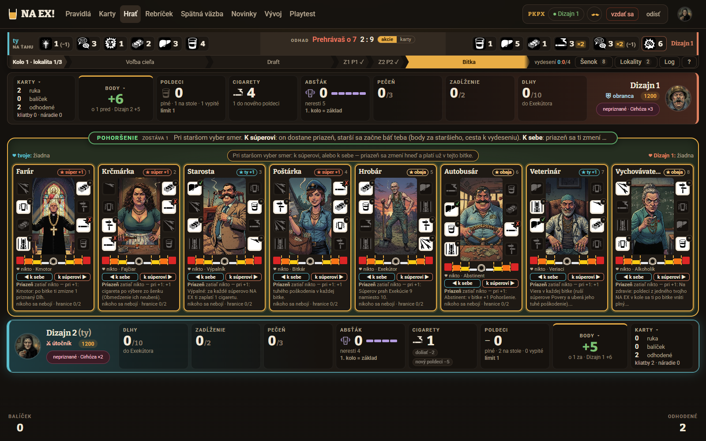
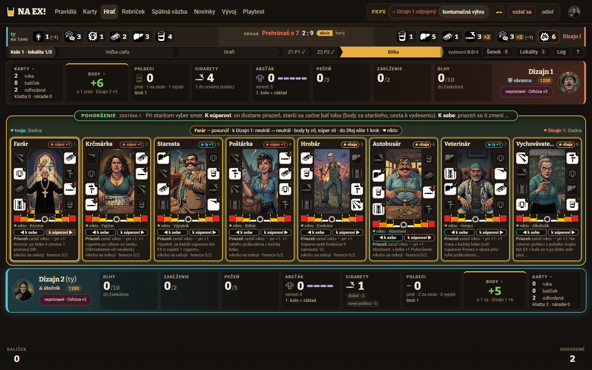
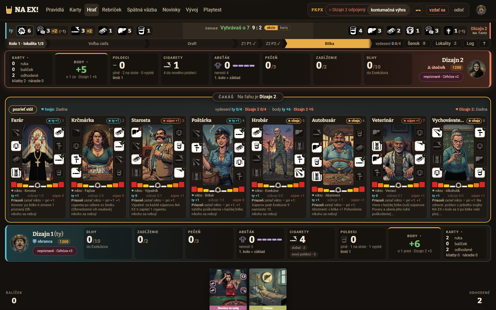
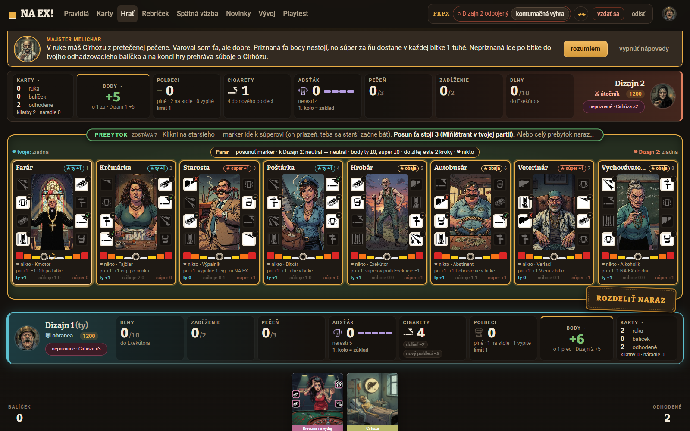
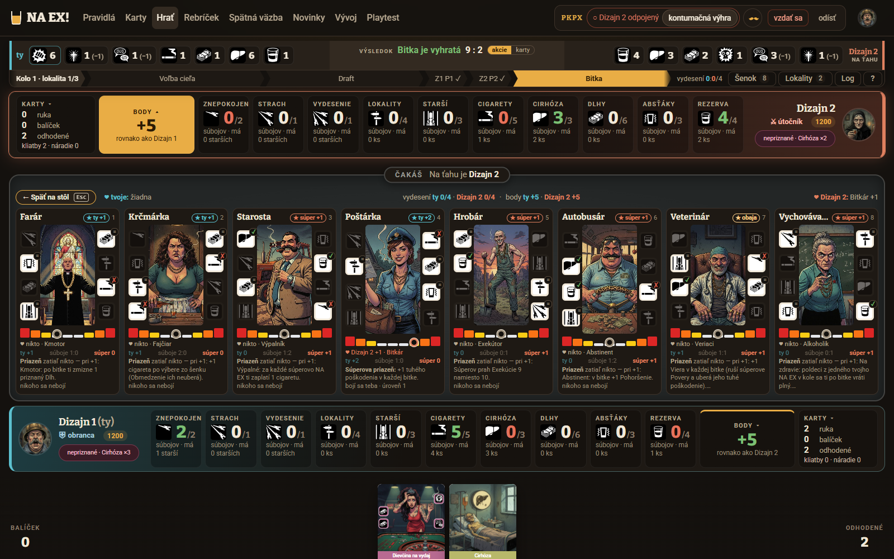
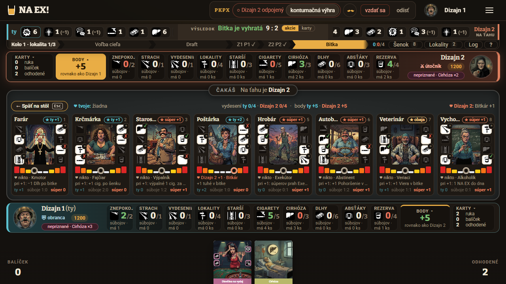
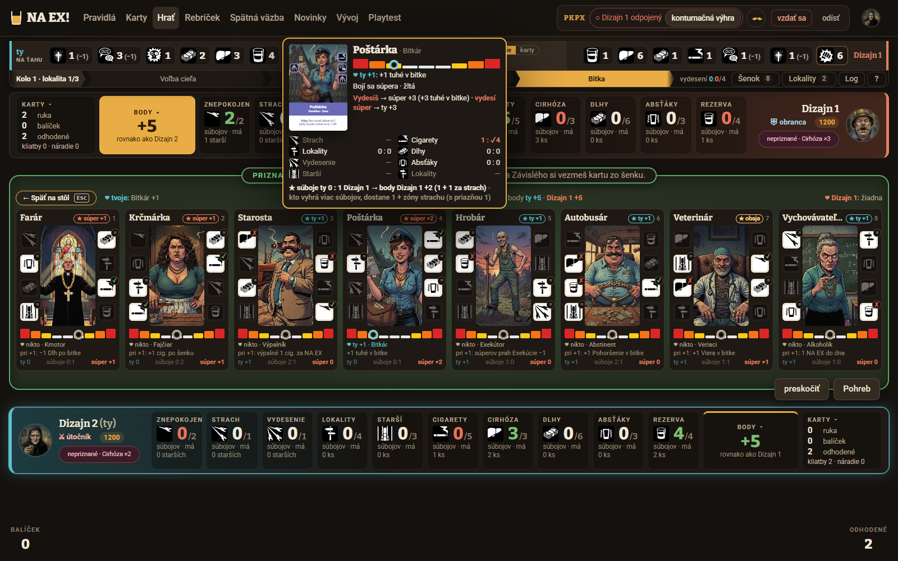

Verdikt. Všetko, čo hráč potrebuje vedieť, hra už pozná a väčšinu aj niekde ukazuje. Chýba však vysvetlenie priamo pri stupnici. Nikde nie je napísané, ktorá polovica je moja, a priazeň, strach a body ležia na štyroch rôznych miestach. Na menšom stole riadok so strachom celkom zmizne. Posun stupnice dnes len 1,6 sekundy blikne a log napíše „marker staršieho postarka sa posúva k hráčovi 2“. Prečo sa pohla a čo z toho má ktorý hráč, sa hráč nedozvie. Navrhujem začať rýchlou výhrou N1 (legenda a popis strán). Hneď po nej odporúčam N3, stopu posunu so zdrojom a dôsledkom pre oboch hráčov. Práve to Michal v #95 žiada.
Používatelia a ich úlohy
Nováčik po výučbe „Čo mi tento starší dáva a čo mi berie?“ Pozná farby, no nevie, ktorá strana je jeho a prečo sa ho boja, keď priazeň má súper.
Hráč v kroku bitky (Pohoršenie, prebytok) „Kam posunúť marker, aby som z toho niečo mal?“ Rozhoduje pod časovým tlakom a za pár sekúnd.
Hráč, ktorý čaká „Čo mi súper práve robí so staršími a čo z toho budem mať?“ Dnes vidí iba „ČAKÁŠ“.
Skúsený hráč „Kto sa koho bojí a koľko je to bodov?“ Chce prehľad všetkých ôsmich naraz, bez otvárania lupy.
Čo má hráč pochopiť (pravidlo §10, bez zmeny)
Marker má dvojakú úlohu. Na čej polovici leží, ten hráč má priazeň, teda bonus počas hry so silou 1/2/3 podľa farby. Starší sa pritom bojí toho druhého a strach sa na konci hry vypláca bodmi: kto vyhrá viac podmienok staršieho, dostane 1 bod a k tomu 1 za každú zónu strachu. Prebytok po bitke posúva markery od držiteľa prebytku k jeho súperovi, Pohoršenie o krok k súperovi alebo k sebe (§9.2, §9.4). Pravidlo je zámerne „otočené“, ako hovorí §9.4: „vystrašený starší ti na konci pridá body […], ale súperovi medzitým dáva svoju priazeň.“ Celé UX stojí na tom, aby hráč videl obe polovice tejto vety naraz.
Toto SVG je zároveň náčrt toho, čo má povedať popover „Ako čítať stupnicu“ v N1.
Toky dnes
Partia playtest/20261025-172338 (Dizajn 1 proti Dizajn 2, krátka hra), kolo 1, bitka o Ihrisko 9 : 2. Dizajn 2 dal Pohoršenie na Farára, Dizajn 1 rozdelil prebytok 7. Miňištrant zdražil posun na 3, takže Poštárka išla 2 kroky do žltej k Dizajn 2 a 1 prebytok prepadol. Okno 1600 × 1000, ak nie je uvedené inak.
T1 — Pohoršenie: „kam posunúť a čo z toho mám“

Pohoršenie: vysvetlenie v pokyne je orezané uprostred vety („priazeň sa ti zmení …“). Hlavička línie hovorí len „vyber smer“.

Náhľad je dobrý („neutrál → neutrál · do žltej ešte 1 krok“), lenže je iba v hlavičke a iba pri prejdení myšou alebo pri fokuse. Na samotnej stupnici sa ukáže len prerušovaný duch.
Hráč prečíta pokyn. Veta s „prečo“ je orezaná (U9).
Prejde myšou na tlačidlo a v hlavičke si prečíta náhľad. Pri ôsmich staršoch a dvoch smeroch je to až 16 prejdení.
Klikne. Marker blikne a nič viac. Pri posune v sivej sa nezmení nič viditeľné (U8).
T2 — Čakajúci hráč: „čo mi súper robí“

Dizajn 1 vidí „ČAKÁŠ · Na ťahu je Dizajn 2“. Nevie, že ide o Pohoršenie, koľko ich ostáva ani čo hrozí (U7). Línia sa mu ukázala, ale hlavička ostala v bežnom súhrne (HernaPlocha.tsx:4872, krok sa posiela len hráčovi na ťahu).
T3 — Prebytok: „prečo idú k súperovi, keď som vyhral“

Pokyn hovorí, čo sa stane („on priazeň, teba sa starší začne báť“), ale nehovorí prečo je to dobré, teda body na konci hry. Aj tu je pokyn orezaný. Náhľad „do žltej ešte 2 kroky“ nepočíta s tým, že pri cene 3 zostáva prebytok len na 2 posuny.
T4 — Po bitke: „čo sa stalo a čo z toho mám“

Dizajn 1 po prebytku. O Poštárke sa dozvie z troch miest: ★ ty +2 v hlavičke, ♥ Dizajn 2 +1 v päte a „bojí sa teba · úroveň 1“ v poslednom riadku. Marker zakrýva farbu zóny, na ktorej stojí (U2). Nikde nie je napísané, ktorá polovica je jeho, ani čo sa zmenilo a prečo.

Pri 1280 × 720 (nízky stôl) riadok „bojí sa…“ zmizne. Je totiž v .ls-ucinok a ten skryje @container linia-starsich (height < 330px) (hra.css:5406, LiniaStarsich.tsx:360). Ostane len priazeň, takže polovica vzťahu chýba.

Najlepšie vysvetlenie v hre je lupa staršieho, kde sú priazeň, strach aj body v jednom bloku. V kroku Pohoršenia a prebytku, keď ju hráč potrebuje najviac, je však vypnutá (LiniaStarsich.tsx:164, lupa={krok === null ? … : undefined}). Riadok „Vydesíš → súper +3“ je presný, no bez kontextu mätie, lebo „vydesíš“ tu znamená „dáš súperovi priazeň“ (U10).
Kroky dnes: posun (blik 1,6 s, HernaPlocha.tsx:3778), potom toast, ale len keď niekto získa alebo posilní priazeň (HernaPlocha.tsx:4002). Strach, stratu priazne ani posun v sivej toast neoznámi. Hráč, ktorý chce vedieť „prečo“, otvorí Log a nájde Prebytok: marker staršieho postarka sa posúva k Dizajn 2. (id namiesto mena, bez dôsledku, engine.ts:3585, engine.ts:3514).
Signály z playtestov a spätnej väzby
„Prebytkom ich posúvam k súperovi. Starší sa potom bojí mňa a za strach dostávam body […] Súper dostane jeho ‚priazeň‘, malý bonus. Prečo je to takto otočené, neviem vysvetliť.“ — „Pitky, priazeň verzus strach a Pohoršenie som nechytila. Viac zmien na stole ako vysvetlení.“Marta Prvýkrát (nováčik), playtest výučby 20261024-155610, hrac1/feedback.md
„Priazeň a strach si trochu pletiem.“ — „Snímka 124: log ‚marker staršieho autobusar sa posúva k hráčovi 2‘ je technický, malé písmeno, ‚hráčovi 2‘.“nováčik 2, 20261024-155610, hrac2/feedback.md
„Prečo prebytok víťaza posúva markery k porazenému a to dáva víťazovi strach/body?“ — „Pre porazeného nejasné a bez šance reagovať.“20261016-134912, hrac2/feedback.md
„Starší: […] stupnica má farby, čím ďalej, tým viac sa ťa boja. Každý starší dá body za svoje podmienky. Podrobnosti neviem.“playtest výučby 20261025-122456, hrac1/feedback.md
„Nejasné: […] kam smeruje priazeň pri prebytku.“ · „chýba vysvetlenie ukazovateľa priazne“20261011-101224 hrac1 · 20261011-125943 sledovateľ (V6 Nápovedy)
Michal, roadmapa #95 (25. 10.): hráč nechápe, čo znamenajú sivá, žltá, oranžová a červená ani prečo sa stupnica posúva. Chce popis pri stupnici a pri každom posune, prečo sa pohla a čo z toho má ktorý hráč. Ľudská spätná väzba na webe sa stupnice zatiaľ netýka. Názory AI hráčov (#17, #33) riešia silu prebytku, nie jeho zrozumiteľnosť.
Audit použiteľnosti
Závažnosť podľa Nielsena: 4 = katastrofa použiteľnosti, 3 = veľký problém, 2 = menší, 1 = kozmetický.
Zobrazených 13 z 13.
#
Problém
Heuristika
Záv.
Dôkaz
Koho, ako často
Rieši
U1
Stupnica nemá legendu ani popis strán. Nikde nie je povedané, že „tvoja polovica je vždy vľavo“ (zrkadlenie #55), ani čo znamená farba a výška.
Rozpoznanie namiesto pamätania; zhoda so svetom
4
LiniaStarsich.tsx:369–391 (stupnica bez textu, aria-hidden); ux-5; citát Marta
každý nováčik, každý pohľad na línii
N1, N5
U2
Posun nevysvetľuje príčinu ani dôsledok: 1,6 s blik, toast len pri získaní priazne, nie pri strachu, strate priazne ani posune v sivej.
Viditeľnosť stavu systému
4
HernaPlocha.tsx:3768–3780, :4002; #95
obaja hráči, každá bitka (1–4 posuny)
N3
U3
Priazeň, strach a body sú na 4 miestach (prstenec markera, ♥ v päte, „bojí sa…“ v poslednom riadku, ★ v hlavičke). Žiadna veta ich nespája.
Rozpoznanie; minimalizmus
3
LiniaStarsich.tsx:279, 306, 349–361; ux-5
všetci, pri každom čítaní staršieho
N2, N5
U4
Na nízkom stole (notebook 1280 × 720) zmizne riadok strachu, ostane len priazeň.
Viditeľnosť stavu
3
hra.css:5406–5414; ux-7
hráči na notebookoch, stále
N2
U5
Marker (15 px disk) zakrýva farbu zóny, na ktorej stojí. Zónu treba odhadnúť zo susedov.
Viditeľnosť stavu
3
hra.css:5249–5260; ux-5; snímka 04 v UI návrhu
všetci
N1 (forma: UI)
U6
Čakajúci hráč nevidí názov kroku, zostávajúci prebytok ani to, čo z posunov dostane.
Viditeľnosť stavu
3
HernaPlocha.tsx:4872; ux-3
vždy jeden z dvoch hráčov, každá bitka
N4, N3
U7
Pokyn kroku hovorí, čo sa stane, ale nie prečo je to dobré (body). Smer „víťaz posúva k porazenému“ je proti intuícii.
Zhoda so svetom; nápoveda
3
HernaPlocha.tsx:3511, 3528; citáty 20261016, Marta
nováčikovia, prvé 2–3 bitky
N4, N1
U8
Lupa staršieho (priazeň, strach a body v jednom bloku) je v kroku Pohoršenia a prebytku vypnutá.
Nápoveda a dokumentácia; flexibilita
3
LiniaStarsich.tsx:164; ux-6
hráč v kroku, každá bitka
N3, N2
U9
Pokyn kroku je pri 1600 px orezaný práve na vete s „prečo“.
Viditeľnosť; minimalizmus
2
ux-1, ux-4
hráč v kroku
N4
U10
Posun v sivom strede vyzerá ako „nič“. Že sa marker priblížil k farbe, ukáže len náhľad v hlavičke pri prejdení myšou.
Viditeľnosť stavu
2
ux-2; HernaPlocha.tsx:3636–3648
najmä 1. kolo (všetci v strede)
N3
U11
Log píše id staršieho a „hráčovi 1“, bez dôsledku.
Zhoda so svetom
2
engine.ts:3514, 3585; citát hrac2
kto hľadá „prečo“ (Log)
N3
U12
Línia hovorí „žltá, úroveň 1“, bar a pravidlá „Znepokojenie / Strach / Vydesenie“. Väzbu na podmienky v bare hráč nevidí.
Konzistencia
2
LiniaStarsich.tsx:19, 360; PRAVIDLA §10 tabuľka; bar ZNEPOKOJENIE 2/2 (ux-5)
všetci, pri bodovaní
N2
U13
Melichar má nápovedu pre priazeň a Pohoršenie, ale nie pre prvý prebytok ani prvý strach. Zmena markera nie je oznámená čítačke (WCAG 4.1.3).
Od najmenšieho po najodvážnejší. N1 až N4 sa navzájom dopĺňajú, N5 je alternatívny pohľad. Ako návrhy vyzerajú, rieši UI dizajnér. Tu sú obsah, toky a správanie.
N1 · Legenda a strany stupnice rýchla výhramalá
Rieši
U1, U5 (požiadavka, forma u UI), čiastočne U7
Čo
Popis strán pri každej stupnici: pod ňou „◀ ty“ vľavo a krstné meno súpera vpravo, napríklad „Dizajn 2 ▶“. Je to krátke a zrkadlenie sa tým vysvetlí samo.
Legenda v hlavičke línie (vždy, aj v kroku), jeden riadok: „♥ priazeň má ten, na koho polovici je marker · bojí sa toho druhého · žltá / oranžová / červená = 1 / 2 / 3“.
Tlačidlo „?“ Ako čítať stupnicu v hlavičke otvorí popover s troma vetami a živým príkladom z tejto partie (prvý starší mimo stredu, inak všeobecný príklad).
Požiadavka na vzhľad: farba zóny, na ktorej marker stojí, musí ostať viditeľná. Marker môže byť nad segmentom ako špendlík, segment pod ním sa zvýrazní. Formu volí UI.
Pred
Hráč vidí farebný pás a krúžok.
Musí si pamätať z výučby, ktorá strana je jeho a čo znamená farba.
Kto nevie, hľadá v Pravidlách (iná stránka, partia beží).
Po
Pod pásom čítam „◀ ty · Dizajn 2 ▶“ a legendu v hlavičke.
Ak neviem, kliknem na „?“, kde sú tri vety a príklad Poštárky.
Esc ma vráti na stôl, partia sa nepreruší.
Drôtený model — hlavička línie a jeden scorecard (pohľad Dizajn 1)
← Späť na stôl♥ priazeň má ten, na koho polovici je marker · bojí sa toho druhého · žltá / oranžová / červená = 1 / 2 / 3? Ako čítať stupnicu
Poštárka★ ty +2
portrét + 4 + 4 podmienky
◀ tyDizajn 2 ▶
(päta podľa N2)
Ako čítať stupnicu
Marker ukazuje, na čej polovici starší je. Tvoja polovica je vždy vľavo.
Kto ho má na svojej polovici, má jeho ♥ priazeň, teda bonus počas hry. Žltá +1, oranžová +2, červená +3.
Bojí sa toho druhého. Strach sa platí na konci: kto vyhrá viac jeho podmienok, dostane 1 b a k tomu 1 za každú farbu strachu.
Teraz: Poštárka je v žltej na strane Dizajn 2. Dizajn 2 má +1 tuhé v bitke. Poštárka sa bojí teba, ak vyhráš viac jej podmienok, dostaneš za ňu 2 b.
Kto ho posúva: prebytok po bitke (kto ho drží, tlačí starších k súperovi) a Pohoršenie (o krok k súperovi alebo k sebe).
RozumiemEsc zavrie
Mikrocopy
Legenda a popover ako v modeli. „Rozumiem“, nie „OK“. Text popoveru je zároveň kandidát na krok výučby (#95, 1. časť), aby sa hráč s rovnakými vetami stretol dvakrát.
Prístupnosť
„?“ je <button aria-expanded aria-controls>, fokus ide do popoveru a Esc ho zavrie a vráti fokus na „?“. Stupnica ostáva aria-hidden, lebo scorecard už má aria-label „Poštárka: žltá, bojí sa teba, priazeň súperova +1“ (LiniaStarsich.tsx:250). Pribudnú doň body. Popisy strán aspoň 11 px, kontrast 4,5 : 1.
Náročnosť
malá 2–4 h. Dotknuté súbory: apps/web/src/hra/LiniaStarsich.tsx (hlavička ls-hlava, Stupnica), apps/web/src/hra/hra.css; príklad z partie používa priazenHraca, obavanyHrac, priazenSila z @naex/core.
Ako overiť
Otázka do playtestu po 1. bitke: „Ukáž staršieho, ktorý sa bojí teba. Kto má jeho priazeň? Koľko bodov by si za neho mohol dostať?“ Sledovať, či nováčik odpovie správne do 10 s bez otvorenia Pravidiel. Dnes podľa výučby 20261024 nevie odpovedať ani jeden z troch.
N2 · Veta vzťahu pri každom staršom malá – stredná
Rieši
U3, U4, U12, čiastočne U8
Čo
Päta scorecardu dnes mieša účinok priazne, strach a súboje a na nízkom stole sa oreže. Nahradiť ju dvoma pevnými riadkami, ktoré nikdy nezmiznú, a jedným bodovým:
♥ riadok: „♥ Dizajn 2 +1 · +1 tuhé v bitke“, prípadne „♥ nikto · pri +1: +1 tuhé v bitke“.
Strach: „bojí sa teba · Znepokojenie“, prípadne „nikoho sa nebojí“. Názov zóny je slovo z pravidiel a z baru (Znepokojenie / Strach / Vydesenie), pri ňom farebný štítok zóny. Nahradí to „úroveň 1“.
Body: „súboje 1 : 0 → ty +2 (1 + 1 za strach)“. Rovnaký tvar ako v lupe (LiniaStarsich.tsx:487–495).
Na nízkom stole ustúpi účinok (je v titulku a v lupe), riadky so vzťahom ostanú. Prejdenie myšou na podmienku ZNEPOKOJENIE v bare už dnes zvýrazní starších (zvyraznena). Pribudne aj opačný smer: prejdenie na štítok „Znepokojenie“ v päte zvýrazní podmienku v bare.
Pred
★ ty +2 v hlavičke: prečo práve 2?
♥ Dizajn 2 +1 · Bitkár v päte.
„bojí sa teba · úroveň 1“ v poslednom riadku. Pri 1280 × 720 chýba.
Spojiť si to musí hráč sám.
Po
Riadok ♥: čo má súper.
Riadok strachu: čo mám ja, rovnakým slovom ako v bare.
Riadok bodov: koľko a prečo (1 + 1 za strach).
Drôtený model — ten istý starší z oboch strán stola
pohľad Dizajn 1
Poštárka★ ty +2
◀ tyDizajn 2 ▶
♥ Dizajn 2 +1 · +1 tuhé v bitke
bojí sa teba · [žltá] Znepokojenie
súboje 1 : 0 → ty +2 (1 + 1 za strach)
pohľad Dizajn 2 (zrkadlovo)
Poštárka★ súper +2
◀ tyDizajn 1 ▶
♥ ty +1 · +1 tuhé v bitke
bojí sa Dizajn 1 · [žltá] Znepokojenie
súboje 0 : 1 → Dizajn 1 +2 (1 + 1 za strach)
sivý stred
Hrobár★ obaja
◀ tyDizajn 2 ▶
♥ nikto · pri +1: súperov prah Exekúcie −1
nikoho sa nebojí
súboje 0 : 0 → obaja +1
Mikrocopy
„bojí sa teba“ a „bojí sa Dizajn 2“ namiesto „bojí sa súpera“ (meno je jasnejšie). Zóny nazývať slovami z pravidiel: Znepokojenie, Strach, Vydesenie. Farba je doplnok, nie jediný nositeľ informácie (WCAG 1.4.1).
Prístupnosť
aria-label scorecardu dostane aj tretiu časť: „…, body teraz ty +2“. Riadky sú obyčajný text, čítačka ich prečíta v poradí.
Náročnosť
malá – stredná pol dňa, hlavne preto, že treba overiť výšku pri 1280, 1440 a 1600 (UI). Súbory: LiniaStarsich.tsx (ls-pata), hra.css (container query na .ls-ucinok), BodovyBar.tsx (opačné zvýraznenie).
Ako overiť
Pri 1280 × 720 položiť otázku: „Za ktorého staršieho by si teraz dostal najviac bodov a prečo?“ Sledovať, či hráč odpovie z línie a nemusí otvárať lupu.
N3 · Stopa posunu: prečo sa pohla a čo z toho má ktorý hráč strednájadro #95
Rieši
U2, U10, U11, čiastočne U6, U8 a U13
Čo
Stopa na stupnici: každý posun nechá na scorecarde stopu, ktorá vydrží do konca nasledujúceho Zhromaždenia: duch pôvodnej pozície, šípka a štítok zdroja („Prebytok · Dizajn 1 ×2“, „Pohoršenie · Dizajn 2 · k sebe“, „Patronát · do stredu“, „Noviny“). Východisko je markerZaciatokKola, ktoré klient už má (elders.ts:32), takže stopa prežije aj obnovenie stránky.
Riadok „čo z toho“ pod stupnicou, kým stopa trvá. Je v ňom dôsledok pre oboch a zmena bodov: „Dizajn 2: ♥ +1 tuhé v bitke · ty: bojí sa ťa (Znepokojenie), body ty +1“. Posun v sivej: „zatiaľ bez účinku · do žltej u Dizajn 2 ešte 1 krok“, aby nevyzeral ako chyba.
Súhrn „Starší po bitke“: keď sa skončí krok prebytku, línia už dnes ostane na stole (vysledokKroku, HernaPlocha.tsx:3716). Do jej hlavičky pribudne rozbaľovací súhrn, kde každý posunutý starší má jeden riadok so zdrojom, pozíciou pred a po a dôsledkom pre oboch. Pod tým sú cigarety za prebytok.
Toast sa rozšíri z „dostávaš priazeň“ (HernaPlocha.tsx:3986–4020) na súhrn bitky: „Bitka posunula 2 starších · Poštárka sa ťa bojí (Znepokojenie) · Dizajn 2 má +1 tuhé“. Klik otvorí súhrn.
Log ľudskou rečou s menom a dôsledkom: „Prebytok (Dizajn 1): Poštárka sivá → žltá u Dizajn 2. Dizajn 2 má jej priazeň +1 (Bitkár), Poštárka sa bojí Dizajn 1 (Znepokojenie).“
Údaje
Pozícia pred a po: markerZaciatokKola a marker (verejné). Zdroj a hráča dnes nesie len text logu (engine.ts:3514, 3585). Navrhujem štruktúrovanú udalosť { type: "posunMarkera", elderId, z, na, zdroj: "prebytok" | "pohorsenie" | "patronat" | "noviny", kto }. Pravidlá sa tým nemenia, poloha markera je verejná informácia pre oboch (bez rizika pre viewFor). Klient z nej poskladá stopu, súhrn, toast aj log.
Drôtený model — Poštárka po prebytku a súhrn bitky (pohľad Dizajn 1)
Poštárka★ ty +2
portrét + podmienky
◀ tyDizajn 2 ▶
Prebytok · Dizajn 1 ×2
Teraz: Dizajn 2 má ♥ +1 tuhé v bitke · Poštárka sa bojí teba (Znepokojenie) · body ty +1
Farár★ ty +1
portrét + podmienky
◀ tyDizajn 2 ▶
Pohoršenie · Dizajn 2
zatiaľ bez účinku · do žltej u teba ešte 1 krok
Starší po bitke o Ihrisko(rozbalené v hlavičke línie, zavrie Esc alebo „Späť na stôl“)
starší
posun
prečo
čo z toho
Poštárka
sivá → žltá u Dizajn 2
Prebytok (Dizajn 1) ×2
Dizajn 2: ♥ +1 tuhé v bitke · ty: bojí sa ťa, body +1
Farár
stred → sivá u teba
Pohoršenie (Dizajn 2)
zatiaľ nič · do žltej u teba 1 krok
Prebytok 7, posun stál 3 (Miňištrant) → 1 prepadol · Dizajn 2 dostal 1 cigaretu za posunutého staršieho.
Mikrocopy
Štítok zdroja: „Prebytok · meno ×n“, „Pohoršenie · meno“ (+ „· k sebe“), „Patronát · do stredu“. Dôsledok vždy v tvare „kto: čo“, nikdy „hráč 1“. Pre posun v sivej: „zatiaľ bez účinku · do žltej u {meno} ešte {n} {krok|kroky}“. Pozície bez čísel (zrkadlenie, rozhodnutie Michala 22. 10.).
Prístupnosť
Súhrn sa oznámi raz na konci kroku cez existujúci role="status" (jedna veta, polite), nie pri každom bliknutí. Stopa nesmie byť len animácia: duch a šípka sú statické a pri prefers-reduced-motion bez pohybu. Rozbaľovací súhrn je <details> alebo tlačidlo s aria-expanded. Cieľ aspoň 24 × 24 px (WCAG 2.5.8).
Náročnosť
stredná 1–2 dni. Súbory: packages/core/src/engine.ts (udalosť posunMarkera pri Pohoršení, prebytku, patronáte a Novinách + test), apps/web/src/hra/useHra.ts (textUdalosti), HernaPlocha.tsx (toast, zmeneniStarsi → stopa), LiniaStarsich.tsx (stopa, riadok, súhrn), hra.css. Bot ani pravidlá sa nemenia.
Ako overiť
Hneď po 1. a 2. bitke položiť otázku: „Čo sa v tejto bitke stalo so staršími a čo z toho máš ty a čo súper?“ Úspech znamená, že hráč odpovie bez otvorenia Logu a správne pomenuje zdroj (prebytok či Pohoršenie). AI playtesterom pridať do nezrovnalosti.md kontrolu, či súhrn sedí s posunmi.
N4 · Krok vidí aj čakajúci a Melichar povie „prečo“ stredná
Rieši
U6, U7, U9, U13
Čo
Pilulka čakajúceho pomenuje krok a dôsledok pre neho: „PREBYTOK · Dizajn 1 rozdeľuje 7 (zostáva 1) — posúva starších k tebe: dostaneš ich priazeň, jeho sa začnú báť.“ Línia mu ukazuje stopy z N3 živo, posun po posune.
Pilulka hráča v kroku je kratšia, aby sa pri 1600 px neorezala, a obsahuje „prečo“:
Prebytok: „Posuň starších k súperovi. On dostane priazeň, teba sa začnú báť a za strach máš na konci body. Posun stojí 1.“
Pohoršenie: „K súperovi: bojí sa teba (body). K sebe: priazeň máš hneď, už v tejto bitke.“
Dve nové nápovedy Melichara v napovedy.json (raz za účet, dajú sa vypnúť). Texty sú návrh a tón schvaľuje Michal:
prebytok · moje (prvý krok prebytku, ktorý rozdeľuje hráč): „Vyhral si o viac, než bolo treba. Ten prebytok tlač starších k súperovi. On od nich dostane priazeň, malý bonus hneď. Teba sa zato začnú báť a strach sa na konci platí bodmi. V tejto dedine je strach viac ako láska.“
prebytok · súperove: „Súper ťa prebil a tlačí starších k tebe. Dostaneš ich priazeň, to ti pomôže hneď. Jeho sa ale začnú báť a za to dostane na konci body. Netešil by som sa priveľmi.“
strach (prvý starší sa začal báť hráča, zvýrazní starsi:{elderId}): „{starsi} sa ťa bojí. Keď na konci vyhráš viac jeho podmienok, dostaneš za neho bod a ešte jeden za každú farbu strachu. Priazeň má zatiaľ súper, nech sa poteší.“
Pred (čakajúci)
„ČAKÁŠ · Na ťahu je Dizajn 1.“
Markery bliknú, ak je línia otvorená.
Po kroku sa nič nevysvetlí. Toast príde len pri priazni.
Po (čakajúci)
„PREBYTOK · Dizajn 1 rozdeľuje 7 — posúva starších k tebe…“
Stopy pribúdajú živo a pri každej je dôsledok pre mňa.
Na konci kroku sa zobrazí súhrn (N3). Pri prvom prebytku pridá vetu aj Melichar.
Drôtený model — pohľad čakajúceho (Dizajn 2) počas prebytku
Prebytok · Dizajn 1 zostáva 1 — posúva starších k tebe: dostaneš ich priazeň, jeho sa začnú báť.
pozrieť stôlDizajn 1 práve: Poštárka sivá → žltá u teba · ♥ ty +1 tuhé v bitke · bojí sa Dizajn 1
Majster Melichar „Súper ťa prebil a tlačí starších k tebe. Dostaneš ich priazeň, to ti pomôže hneď. Jeho sa ale začnú báť a za to dostane na konci body. Netešil by som sa priveľmi.“ rozumiem
Prístupnosť
Pilulka už má role="status" aria-live="polite" (HernaPlocha.tsx:4815). Pri zmene kroku sa nová veta prečíta. Text „Dizajn 1 práve: …“ sa obnovuje najviac raz za posun. Melichar nečaká na klik a neblokuje stôl (ako dnes).
Náročnosť
stredná 1 deň. Súbory: HernaPlocha.tsx (pokyn pri krokStarsich pre !krokMoj, krok pre LiniaStarsich aj čakajúcemu v režime „len čítanie“), packages/core/data/vyucba/napovedy.json a rozpoznanie situácie v jadre (napovedy.ts), Napovedy.tsx netreba meniť.
Ako overiť
V playteste dvoch ľudí sa po bitke opýtať porazeného: „Prečo sa ti starší posunuli k tebe a je to pre teba dobré alebo zlé?“ Dnes je to otázka z 20261016 („pre porazeného nejasné“). Pri AI playtesteroch sledovať, či nezrovnalosti „smer prebytku“ zmiznú.
N5 · Pohľad „Kto sa koho bojí“ odvážnejšístredná – veľká
Rieši
U1, U3 a mentálny model „otočenej“ priazne; prehľad pre skúseného hráča
Čo
Druhý pohľad na tých istých starších, prepínač v hlavičke línie „Stupnice | Kto sa koho bojí“. Hráč si ho pamätá v rámci partie. Starší sú v troch stĺpcoch podľa vzťahu, nie podľa poradia:
„Boja sa teba · body pre teba · priazeň má Dizajn 2“ | „Nikoho sa neboja“ | „Boja sa Dizajn 2 · body pre neho · priazeň máš ty“.
Každý starší je riadok so zónou (Znepokojenie / Strach / Vydesenie), bodmi teraz a účinkom priazne. Posun presunie riadok medzi stĺpcami. Pri prefers-reduced-motion sa riadok presunie bez animácie a so stopou z N3. Navrch ľavého stĺpca patrí „vydesení 0/4“. Otázku „čo z toho mám“ tento pohľad zodpovie usporiadaním, bez čítania pásu.
Riziko
Dva pohľady sú viac učenia. Mení sa poradie starších, takže hráč stráca väzbu „starší č. 4 = Poštárka“. Prekrýva sa s variantom C (tabuľa stupníc) z návrhu z 23. 10.. Menšia verzia: tento pohľad použiť len ako obsah súhrnu „Starší po bitke“ z N3.
Drôtený model — pohľad Dizajn 1 po bitke
← Späť na stôlpohľad: [Stupnice][Kto sa koho bojí]vydesení ty 0/4 · Dizajn 2 0/4 · body ty +5 · Dizajn 2 +5
Boja sa teba → body pre teba · ♥ má Dizajn 2
Poštárka · Znepokojeniety +2 · D2 ♥ +1 tuhé
Ďalej tlačiť k Dizajn 2 = viac bodov pre teba, väčší bonus pre neho.
Nikoho sa neboja
Farár · u teba, 1 krok do žltejty +1
Krčmárkaty +1
StarostaD2 +1
Hrobár · Autobusár · ……
Boja sa Dizajn 2 → body pre neho · ♥ máš ty
Zatiaľ nikto. Keď ťa súper prebije, starší prídu sem: dostaneš ich priazeň, jeho sa budú báť.
Prístupnosť
Stĺpce ako tri <section> s nadpismi a riadky ako zoznam. Pre čítačku je to prirodzenejšie než deväť segmentov pásu. Prepínač je dvojica tlačidiel s aria-pressed.
Náročnosť
stredná – veľká 2–3 dni vrátane výšky stola a lupy. Súbory: nový komponent v apps/web/src/hra/ (napr. VztahyStarsich.tsx), HernaPlocha.tsx (prepínač), hra.css.
Ako overiť
A/B v dvoch playtestoch s ľuďmi: polovica hrá so Stupnicami, polovica s pohľadom „Kto sa koho bojí“. Rovnaká otázka ako pri N1 a pri tom meraný čas. Ďalej sledovať, koľkokrát hráči prepnú (ak sa nevracajú ku Stupniciam, pohľad je lepší predvolený).
Odporúčané poradie
N1 hneď (rýchla výhra, pár hodín). Odpovie na „čo znamená“. Text popoveru prevezme aj výučba (#95, 1. časť).
N3 ako ďalší krok, je to jadro žiadosti „prečo sa posunula a čo z toho má ktorý hráč“. Udalosť posunMarkera v jadre je predpokladom pre N4 aj N5.
N2 spolu s N3 alebo hneď po nej. Ide o rovnakú pätu scorecardu a rovnaký výškový rozpočet, s UI dizajnérom je to jedna úloha.
N4 po N3, lebo čakajúci potrebuje stopy, aby mal na čo pozerať. Melicharove nápovedy sa dajú pridať aj samostatne, hneď.
N5 len ako experiment, ak playtest po N1 až N4 ukáže, že nováčik si priazeň a strach stále pletie. Najprv v malej verzii (obsah súhrnu „Starší po bitke“).
Všetko spolu stačí overiť jedným playtestom s ľuďmi (nováčik a skúsený) a jedným turnusom AI (nezrovnalosti v súhrne). AI hráči hrajú cez konzolu, takže vzhľad a čitateľnosť neoveria.
Otázky
Do playtestu (s ľuďmi)
Po 1. bitke: „Ukáž staršieho, ktorý sa bojí teba. Kto má jeho priazeň? Koľko bodov za neho môžeš dostať?“ (N1, N2)
Po každej bitke: „Čo sa so staršími stalo, prečo a čo z toho máš ty a čo súper?“ Odpovedať bez Logu. (N3)
Porazenému: „Prečo idú starší k tebe? Je to pre teba dobré, alebo zlé?“ (N4)
Pri 1280 × 720: „Za ktorého staršieho by si teraz dostal najviac bodov?“ (N2)
Sledovať: koľkokrát hráč otvorí Log alebo Pravidlá počas bitky (cieľ: menej), či kliká na „?“ a či ho po 2. kole ešte potrebuje.
Na Michala
Slová zón: smie línia používať názvy z pravidiel (Znepokojenie, Strach, Vydesenie) namiesto „žltá, úroveň 1“? Bar ich už používa. (N2)
Ako dlho drží stopa posunu: do konca nasledujúceho Zhromaždenia (návrh), do konca kola, alebo do ďalšej bitky? (N3)
Udalosť posunMarkera v jadre: súhlas s malou zmenou v packages/core (bez zmeny pravidiel, poloha markera je verejná)? Bez nej by klient musel čítať text logu. (N3)
Melichar: schváliť tón troch nových nápovied (prebytok moje a súperove, strach), prípadne ich prevziať aj do výučby. (N4)
Pomenovanie polovíc: „◀ ty · Dizajn 2 ▶“ (návrh), alebo „tvoja strana“ a „strana súpera“? Meno je jasnejšie, no pri dlhých menách sa bude skracovať. (N1)
Pravidlo, nie UX: náhľad „do žltej ešte 2 kroky“ pri prebytku nepočíta s Miňištrantom (posun za 3 a prebytok 7 vystačí na 2 kroky). Ukázať radšej „na koľko posunov prebytok stačí“? Je to oprava náhľadu, nie pravidla, len potvrdenie zámeru.